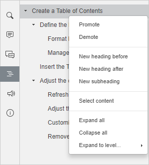
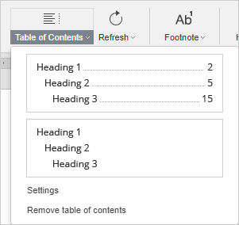
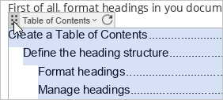
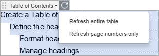
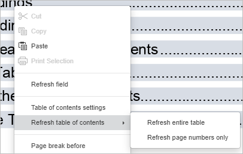
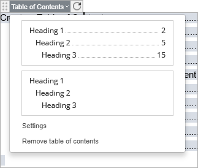
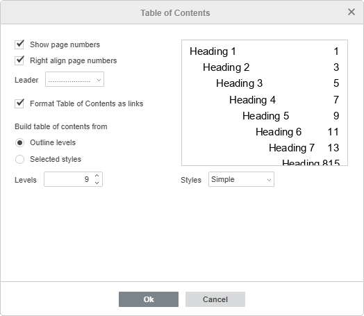
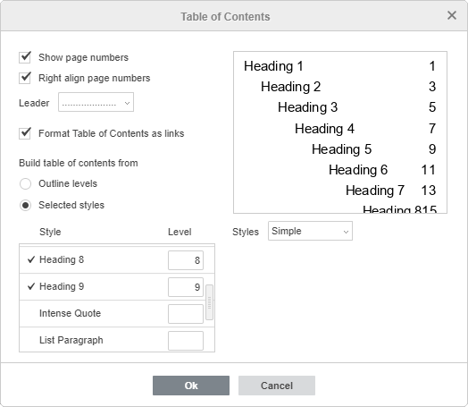
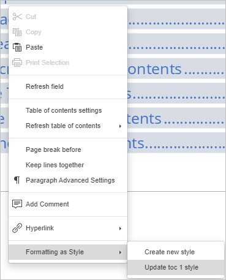

Kreiranje sadržaja
Sadržaj sadrži listu svih poglavlja (odeljaka itd.) u dokumentu i prikazuje brojeve stranica na kojima svako poglavlje počinje. U Document Editoru omogućava lako kretanje kroz višestrani dokument i brzo prelaženje na potreban deo teksta. Sadržaj se generiše automatski na osnovu naslova u dokumentu koji su formatirani pomoću ugrađenih stilova. Na taj način je lako ažurirati kreirani sadržaj bez ručnog menjanja naslova i brojeva stranica ako se tekst dokumenta promeni.
Struktura naslova u sadržaju
Formatiranje naslova
Prvo formatirajte naslove u dokumentu koristeći neki od unapred definisanih stilova. Da biste to uradili,
- Izaberite tekst koji želite da uključite u sadržaj.
- Otvorite meni sa stilovima na desnoj strani kartice Početak na gornjoj traci sa alatkama.
- Kliknite na željeni stil koji želite da primenite. Podrazumevano možete koristiti stilove Naslov 1 – Naslov 9.
Ako želite da koristite druge stilove (npr. Naslov, Podnaslov itd.) za formatiranje naslova, potrebno je da prethodno prilagodite podešavanja sadržaja (vidi odgovarajući odeljak ispod). Da biste saznali više o dostupnim stilovima formatiranja, pogledajte ovu stranicu.
Da biste brzo dodali tekst kao naslov,
- Izaberite tekst koji želite da uključite u sadržaj.
- Idite na karticu Reference na gornjoj traci sa alatkama.
- Kliknite na dugme Dodaj tekst na gornjoj traci sa alatkama.
- Izaberite željeni nivo naslova.
Kada su naslovi formatirani, možete kliknuti na ikonu Naslovi na levoj bočnoj traci da otvorite panel koji prikazuje listu svih naslova sa odgovarajućim nivoima ugnježđivanja. Ovaj panel omogućava lako kretanje između naslova u tekstu dokumenta, kao i upravljanje strukturom naslova.
Kliknite desnim tasterom na naslov na listi i koristite jednu od dostupnih opcija iz menija:

- Unapredi – da pomerite trenutno izabrani naslov na viši nivo u hijerarhijskoj strukturi, npr. iz Naslov 2 u Naslov 1.
- Unazadi – da pomerite trenutno izabrani naslov na niži nivo u hijerarhijskoj strukturi, npr. iz Naslov 1 u Naslov 2.
- Novi naslov pre – da dodate novi prazan naslov istog nivoa pre trenutno izabranog.
- Novi naslov posle – da dodate novi prazan naslov istog nivoa posle trenutno izabranog.
- Novi podnaslov – da dodate novi prazan podnaslov (tj. naslov nižeg nivoa) posle trenutno izabranog naslova.
Kada se doda naslov ili podnaslov, kliknite na dodati prazan naslov na listi i upišite svoj tekst. To možete uraditi i u tekstu dokumenta i direktno na panelu Naslovi.
- Izaberi sadržaj – da izaberete tekst ispod trenutnog naslova u dokumentu (uključujući i tekst koji pripada svim njegovim podnaslovima).
- Proširi sve – da proširite sve nivoe naslova na panelu Naslovi.
- Skupi sve – da skupite sve nivoe naslova osim nivoa 1 na panelu Naslovi.
- Proširi do nivoa – da proširite strukturu naslova do izabranog nivoa. Npr. ako izaberete nivo 3, biće prošireni nivoi 1, 2 i 3, dok će nivo 4 i niži biti skupljeni.
Da biste ručno proširili ili skupili pojedine nivoe naslova, koristite strelice levo od naslova.
Da biste zatvorili panel Naslovi, ponovo kliknite na ikonu Naslovi na levoj bočnoj traci.
Umetanje sadržaja u dokument
Da biste umetnuli sadržaj u dokument:
- Pozicionirajte kursor na mesto gde želite da dodate sadržaj.
- Prebacite se na karticu Reference na gornjoj traci sa alatkama.
- Kliknite na ikonu Sadržaj na gornjoj traci sa alatkama ili
kliknite na strelicu pored ove ikone i izaberite željenu opciju rasporeda iz menija. Možete odabrati sadržaj koji prikazuje naslove, brojeve stranica i tačkice (vodilice), ili samo naslove.
Izgled sadržaja može se kasnije prilagoditi u podešavanjima.
Sadržaj će biti dodat na trenutnu poziciju kursora. Da biste promenili njegovu poziciju, možete izabrati polje sadržaja (kontrolu sadržaja) i prevući ga na željeno mesto. Da biste to uradili, kliknite na dugme u gornjem levom uglu polja sadržaja i prevucite ga, bez puštanja dugmeta miša, na drugu poziciju u tekstu dokumenta.

Da biste se kretali između naslova, pritisnite taster Ctrl i kliknite na željeni naslov unutar polja sadržaja. Bićete prebačeni na odgovarajuću stranicu.
Prilagođavanje kreiranog sadržaja
Ažuriranje sadržaja
Nakon što kreirate sadržaj, možete nastaviti da uređujete tekst dodavanjem novih poglavlja, menjanjem njihovog redosleda, uklanjanjem pasusa ili proširivanjem teksta vezanog za naslov, tako da se brojevi stranica koji odgovaraju prethodnom ili sledećem odeljku mogu promeniti. U tom slučaju koristite opciju Ažuriraj da automatski primenite sve izmene.
Kliknite na strelicu pored ikone Ažuriraj na kartici Reference na gornjoj traci sa alatkama i izaberite željenu opciju iz menija:
- Ažuriraj ceo sadržaj – da dodate naslove koje ste dodali u dokument, uklonite one koje ste obrisali, ažurirate izmenjene (preimenovane) naslove, kao i da osvežite brojeve stranica.
- Ažuriraj samo brojeve stranica – da osvežite samo brojeve stranica bez primene promena na naslovima.
Alternativno, možete izabrati sadržaj u tekstu dokumenta i kliknuti na ikonu Ažuriraj na vrhu polja sadržaja da biste prikazali gore navedene opcije.

Takođe možete kliknuti desnim tasterom bilo gde unutar sadržaja i koristiti odgovarajuće opcije iz kontekstualnog menija.

Podešavanje sadržaja
Da biste otvorili podešavanja sadržaja, možete postupiti na sledeće načine:
- Kliknite na strelicu pored ikone Sadržaj na gornjoj traci sa alatkama i izaberite opciju Podešavanja iz menija.
- Izaberite sadržaj u tekstu dokumenta, kliknite na strelicu pored njegovog naslova i izaberite opciju Podešavanja iz menija.

- Kliknite desnim tasterom bilo gde unutar sadržaja i koristite opciju Podešavanja sadržaja iz kontekstualnog menija.
Otvara se novi prozor u kome možete podesiti sledeće opcije:

- Prikaži brojeve stranica – omogućava prikazivanje brojeva stranica.
- Poravnaj brojeve stranica desno – omogućava poravnavanje brojeva stranica sa desne strane stranice.
- Voditelj – omogućava izbor tipa voditelja. Voditelj je niz znakova (tačkica ili crtica) koji popunjava prostor između naslova i odgovarajućeg broja stranice. Takođe možete izabrati opciju Nijedno ako ne želite da koristite voditelje.
- Formatiraj sadržaj kao linkove – ova opcija je podrazumevano uključena. Ako je isključite, nećete moći da prelazite na poglavlja pomoću Ctrl + klik na odgovarajući naslov.
- Kreiraj sadržaj od – ovaj deo omogućava određivanje broja nivoa hijerarhije, kao i podrazumevanih stilova koji će se koristiti za kreiranje sadržaja. Označite odgovarajuće dugme:
- Nivoi hijerarhije – kada je ova opcija izabrana, možete podesiti broj korišćenih nivoa. Kliknite na strelice u polju Nivoi da smanjite ili povećate broj nivoa (dostupne vrednosti su od 1 do 9). Npr. ako izaberete vrednost 3, naslovi od nivoa 4 do 9 neće biti uključeni u sadržaj.
-
Izabrani stilovi – kada je ova opcija izabrana, možete odrediti dodatne stilove koji se mogu koristiti za kreiranje sadržaja i dodeliti im odgovarajući nivo. Unesite željeni broj nivoa u polje desno od stila. Nakon što sačuvate podešavanja, moći ćete da koristite taj stil prilikom kreiranja sadržaja.

-
Stilovi – omogućava izbor željenog izgleda sadržaja. Izaberite stil iz padajuće liste. Polje za pregled iznad prikazuje kako će sadržaj izgledati.
Dostupna su četiri podrazumevana stila: Jednostavan, Standardni, Moderni, Klasični. Opcija Trenutni se koristi ako prilagodite stil sadržaja.
Kliknite na dugme OK u prozoru podešavanja da primenite izmene.
Prilagođavanje stila sadržaja
Nakon što primenite jedan od podrazumevanih stilova sadržaja u prozoru Podešavanja sadržaja, možete dodatno menjati taj stil tako da tekst u polju sadržaja izgleda onako kako želite.
- Izaberite tekst unutar polja sadržaja, npr. pritiskom na dugme u gornjem levom uglu kontrole sadržaja.
- Formatirajte stavke sadržaja menjajući font, veličinu, boju ili primenjujući efekte (podebljano, kurziv itd.).
- Zatim ažurirajte stilove za stavke svakog nivoa. Da biste ažurirali stil, kliknite desnim tasterom na formatiranu stavku, izaberite opciju Formatiranje kao stil iz kontekstualnog menija i kliknite na opciju Ažuriraj toc N stil (toc 2 odgovara stavkama nivoa 2, toc 3 stavkama nivoa 3 itd.).

- Ažurirajte sadržaj.
Uklanjanje sadržaja
Da biste uklonili sadržaj iz dokumenta:
- kliknite na strelicu pored ikone Sadržaj na gornjoj traci sa alatkama i koristite opciju Ukloni sadržaj,
- ili kliknite na strelicu pored naslova polja sadržaja i koristite opciju Ukloni sadržaj.